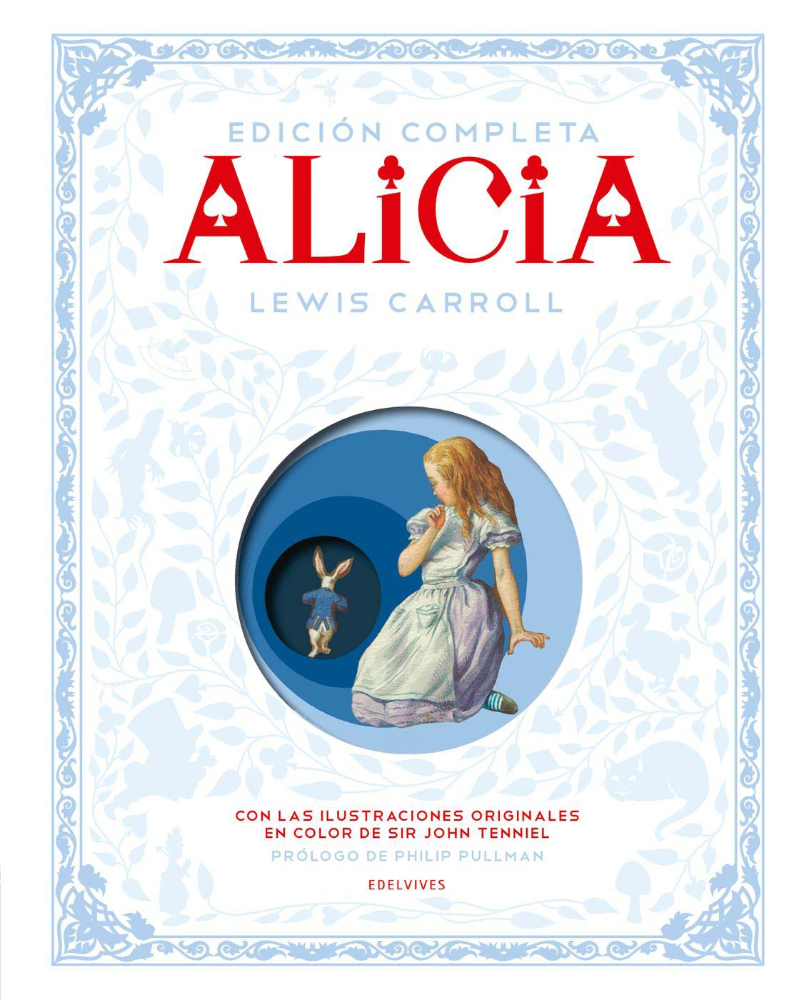

- Alicia en el País de las Maravillas
- Autor: Lewis Carroll
- Fecha de Publicación: 1865
- Sinopsis:
Alicia está aburrida, mientras su hermana lee un libro sin ilustraciones. ¿Cómo alguien puede leer algo tan poco entretenido? De repente, un conejo blanco, vestido con pantalón y saco, que mira desesperado su reloj, anuncia preocupado que llegará tarde a alguna parte. Alicia no se puede resistir y sigue al conejo hasta su madriguera, una especie de túnel que conduce a la niña a un universo asombroso, lleno de juegos lógicos y graciosos enredos del lenguaje. En ese mundo, Alicia vivirá experiencias increíbles con otros personajes tan divertidos como el conejo: la Liebre de Marzo, el Sombrerero, el Lirón...